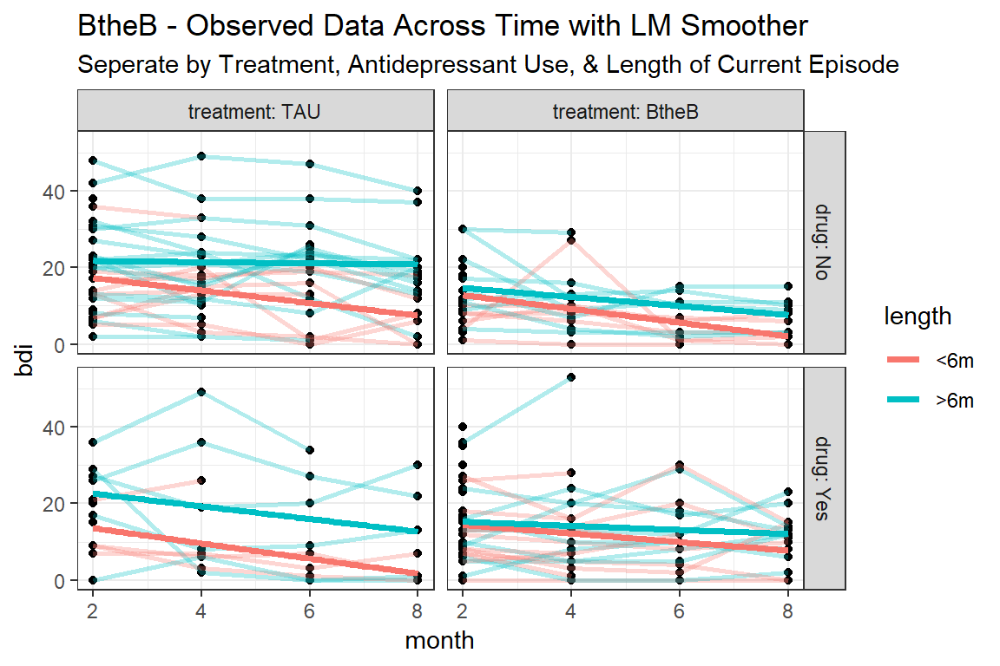
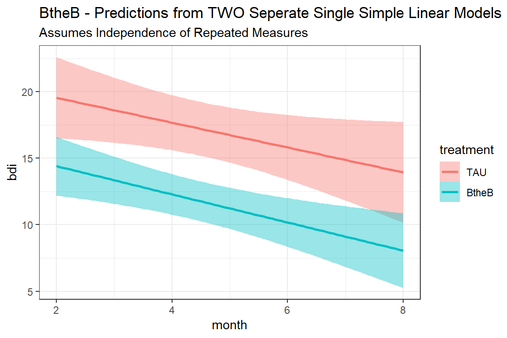

12 MLM, Longitudinal: Hox ch 5 - student GPA
library(tidyverse) # all things tidy
library(pander) # nice looking genderal tabulations
library(furniture) # nice Table1() descriptives
library(texreg) # Convert Regression Output to LaTeX or HTML Tables
library(psych) # contains some useful functions, like headTail
library(sjstats) # ICC calculations
library(sjPlot) # Visualization for Models
library(effects) # Effect displays for Models
library(lme4) # non-linear mixed-effects models
library(haven) # read in SPSS dataset12.1 Background
The text “Multilevel Analysis: Techniques and Applications, Third Edition” (Hox, Moerbeek, and Van de Schoot 2017) has a companion website which includes links to all the data files used throughout the book (housed on the book’s GitHub repository).
The following example is used through out Hox, Moerbeek, and Van de Schoot (2017)’s chapater 5.
The GPA for 200 college students were followed for 6 consecutive semesters (simulated). Job status was also measured as number of hours worked for the same size occations. Time-invariant covariates are the student’s gender and high school GPA. The variable admitted will not be used.
data_raw <- haven::read_sav("https://github.com/MultiLevelAnalysis/Datasets-third-edition-Multilevel-book/raw/master/chapter%205/GPA2/gpa2long.sav") %>%
haven::as_factor() # retain the labels from SPSS --> factor
tibble::glimpse(data_raw) Rows: 1,200
Columns: 7
$ student <dbl> 1, 1, 1, 1, 1, 1, 2, 2, 2, 2, 2, 2, 3, 3, 3, 3, 3, 3, 4, 4...
$ occas <fct> year 1 semester 1, year 1 semester 2, year 2 semester 1, y...
$ gpa <dbl> 2.3, 2.1, 3.0, 3.0, 3.0, 3.3, 2.2, 2.5, 2.6, 2.6, 3.0, 2.8...
$ job <fct> 2 hours, 2 hours, 2 hours, 2 hours, 2 hours, 2 hours, 2 ho...
$ sex <fct> female, female, female, female, female, female, male, male...
$ highgpa <dbl> 2.8, 2.8, 2.8, 2.8, 2.8, 2.8, 2.5, 2.5, 2.5, 2.5, 2.5, 2.5...
$ admitted <fct> yes, yes, yes, yes, yes, yes, no, no, no, no, no, no, yes,... job
occas no job 1 hour 2 hours 3 hours 4 or more hours <NA>
year 1 semester 1 0 0 172 28 0 0
year 1 semester 2 0 0 169 31 0 0
year 2 semester 1 0 7 159 34 0 0
year 2 semester 2 0 5 169 26 0 0
year 3 semester 1 0 18 150 32 0 0
year 3 semester 2 0 22 148 30 0 0
<NA> 0 0 0 0 0 0data_long <- data_raw %>%
dplyr::mutate(student = factor(student)) %>%
dplyr::mutate(sem = case_when(occas == "year 1 semester 1" ~ 1,
occas == "year 1 semester 2" ~ 2,
occas == "year 2 semester 1" ~ 3,
occas == "year 2 semester 2" ~ 4,
occas == "year 3 semester 1" ~ 5,
occas == "year 3 semester 2" ~ 6)) %>%
dplyr::mutate(job = fct_drop(job)) %>%
dplyr::mutate(hrs = case_when(job == "no job" ~ 0,
job == "1 hour" ~ 1,
job == "2 hours" ~ 2,
job == "3 hours" ~ 3,
job == "4 or more hours" ~ 4)) %>%
dplyr::select(student, sex, highgpa, sem, job, hrs, gpa) %>%
dplyr::arrange(student, sem)
psych::headTail(data_long, top = 10) student sex highgpa sem job hrs gpa
1 1 female 2.8 1 2 hours 2 2.3
2 1 female 2.8 2 2 hours 2 2.1
3 1 female 2.8 3 2 hours 2 3
4 1 female 2.8 4 2 hours 2 3
5 1 female 2.8 5 2 hours 2 3
6 1 female 2.8 6 2 hours 2 3.3
7 2 male 2.5 1 2 hours 2 2.2
8 2 male 2.5 2 3 hours 3 2.5
9 2 male 2.5 3 2 hours 2 2.6
10 2 male 2.5 4 2 hours 2 2.6
11 <NA> <NA> ... ... <NA> ... ...
12 200 male 3.4 3 2 hours 2 3.4
13 200 male 3.4 4 2 hours 2 3.5
14 200 male 3.4 5 1 hour 1 3.3
15 200 male 3.4 6 1 hour 1 3.4data_wide <- data_long %>%
tidyr::pivot_wider(names_from = sem,
values_from = c(job, hrs, gpa),
names_sep = "_")
psych::headTail(data_wide) student sex highgpa job_1 job_2 job_3 job_4 job_5 job_6 hrs_1
1 1 female 2.8 2 hours 2 hours 2 hours 2 hours 2 hours 2 hours 2
2 2 male 2.5 2 hours 3 hours 2 hours 2 hours 2 hours 2 hours 2
3 3 female 2.5 2 hours 2 hours 2 hours 3 hours 2 hours 2 hours 2
4 4 male 3.8 3 hours 2 hours 2 hours 2 hours 2 hours 2 hours 3
5 <NA> <NA> ... <NA> <NA> <NA> <NA> <NA> <NA> ...
6 197 female 2.1 2 hours 2 hours 3 hours 2 hours 2 hours 2 hours 2
7 198 male 4 2 hours 2 hours 2 hours 2 hours 1 hour 2 hours 2
8 199 female 2.3 2 hours 2 hours 3 hours 2 hours 2 hours 3 hours 2
9 200 male 3.4 2 hours 2 hours 2 hours 2 hours 1 hour 1 hour 2
hrs_2 hrs_3 hrs_4 hrs_5 hrs_6 gpa_1 gpa_2 gpa_3 gpa_4 gpa_5 gpa_6
1 2 2 2 2 2 2.3 2.1 3 3 3 3.3
2 3 2 2 2 2 2.2 2.5 2.6 2.6 3 2.8
3 2 2 3 2 2 2.4 2.9 3 2.8 3.3 3.4
4 2 2 2 2 2 2.5 2.7 2.4 2.7 2.9 2.7
5 ... ... ... ... ... ... ... ... ... ... ...
6 2 3 2 2 2 2.9 2.5 2.8 3.2 3.3 3.8
7 2 2 2 1 2 2.5 2.9 3 3.2 3.3 3.4
8 2 3 2 2 3 2.6 2.3 2.7 2.7 2.8 2.8
9 2 2 2 1 1 2.8 3.2 3.4 3.5 3.3 3.4data_wide %>%
dplyr::group_by(sex) %>%
furniture::table1("High School GPA" = highgpa,
"Initial College GPA" = gpa_1,
"Initial Job" = job_1,
"Initial Hrs" = hrs_1,
output = "markdown",
digits = 3,
total = TRUE,
test = TRUE)| Total | male | female | P-Value | |
|---|---|---|---|---|
| n = 200 | n = 95 | n = 105 | ||
| High School GPA | 0.31 | |||
| 2.987 (0.596) | 3.033 (0.592) | 2.947 (0.600) | ||
| Initial College GPA | 0.094 | |||
| 2.594 (0.312) | 2.555 (0.314) | 2.629 (0.307) | ||
| Initial Job | 0.192 | |||
| 1 hour | 0 (0%) | 0 (0%) | 0 (0%) | |
| 2 hours | 172 (86%) | 78 (82.1%) | 94 (89.5%) | |
| 3 hours | 28 (14%) | 17 (17.9%) | 11 (10.5%) | |
| Initial Hrs | 0.132 | |||
| 2.140 (0.348) | 2.179 (0.385) | 2.105 (0.308) |
data_wide %>%
dplyr::group_by(sex) %>%
furniture::table1(gpa_1, gpa_2, gpa_3, gpa_4, gpa_5, gpa_6,
output = "markdown",
digits = 3,
total = TRUE,
test = TRUE,
caption = "Hox Table 5.2 (page 77) GPA means at six occations, for male and female students",
caption.above = TRUE)| Total | male | female | |
|---|---|---|---|
| n = 200 | n = 95 | n = 105 | |
| gpa_1 | |||
| 2.594 (0.312) | 2.555 (0.314) | 2.629 (0.307) | |
| gpa_2 | |||
| 2.716 (0.336) | 2.666 (0.318) | 2.760 (0.348) | |
| gpa_3 | |||
| 2.810 (0.354) | 2.742 (0.363) | 2.871 (0.335) | |
| gpa_4 | |||
| 2.918 (0.355) | 2.818 (0.351) | 3.009 (0.335) | |
| gpa_5 | |||
| 3.019 (0.358) | 2.915 (0.359) | 3.113 (0.332) | |
| gpa_6 | |||
| 3.134 (0.377) | 3.028 (0.375) | 3.230 (0.354) |
12.2 MLM
12.2.1 Null Models and ICC
# Intraclass Correlation Coefficient
Adjusted ICC: 0.369
Conditional ICC: 0.369Over a third of the variance in the 6 GPA measures is variance between individuals, and about two-thirds is variance within individuals across time, \(\rho = .369\).
# Intraclass Correlation Coefficient
Adjusted ICC: 0.523
Conditional ICC: 0.412After accounting for the linear change in GPA over semesters, about half of the remaining variance in GPA scores is attribuTable person-to-person difference.
Another way to say it, is about half of the variance in initial GPAs is due to student-to-student differences.
12.2.2 Fixed Effects
fit_lmer_0_ml <- lmerTest::lmer(gpa ~ 1 + (1|student),
data = data_long,
REML = FALSE)
fit_lmer_1_ml <- lmerTest::lmer(gpa ~ I(sem - 1) + (1|student),
data = data_long,
REML = FALSE)
fit_lmer_2_ml <- lmerTest::lmer(gpa ~ I(sem - 1) + hrs + (1|student),
data = data_long,
REML = FALSE)
fit_lmer_3_ml <- lmerTest::lmer(gpa ~ I(sem - 1) + hrs + highgpa + sex + (1|student),
data = data_long,
REML = FALSE)| Model 1 | Model 2 | Model 3 | Model 4 | |
|---|---|---|---|---|
| (Intercept) | 2.87*** | 2.60*** | 2.97*** | 2.64*** |
| (0.02) | (0.02) | (0.04) | (0.10) | |
| sem - 1 | 0.11*** | 0.10*** | 0.10*** | |
| (0.00) | (0.00) | (0.00) | ||
| hrs | -0.17*** | -0.17*** | ||
| (0.02) | (0.02) | |||
| highgpa | 0.08** | |||
| (0.03) | ||||
| sexfemale | 0.15*** | |||
| (0.03) | ||||
| AIC | 919.46 | 401.65 | 318.40 | 296.76 |
| BIC | 934.73 | 422.01 | 343.85 | 332.39 |
| Log Likelihood | -456.73 | -196.82 | -154.20 | -141.38 |
| Num. obs. | 1200 | 1200 | 1200 | 1200 |
| Num. groups: student | 200 | 200 | 200 | 200 |
| Var: student (Intercept) | 0.06 | 0.06 | 0.05 | 0.04 |
| Var: Residual | 0.10 | 0.06 | 0.06 | 0.06 |
| p < 0.001; p < 0.01; p < 0.05 | ||||
texreg::knitreg(list(fit_lmer_0_ml, fit_lmer_1_ml, fit_lmer_2_ml, fit_lmer_3_ml),
custom.model.names = c("M1: Null",
"M2: Occ",
"M3: Job",
"M4: GPA, Sex"),
custom.coef.map = list("(Intercept)" = "(Intercept)",
"I(sem - 1)" = "Semester",
"hrs" = "Hours Working",
"highgpa" = "High School GPA",
"sexfemale" = "Female vs. Male"),
groups = list("Level 1 Main Effects, Occasion-Specific" = 2:3,
"Level 2 Main Effects, Person-Specific" = 4:5),
custom.note = "%stars. \nNote: Intercept refers to population mean for a Male who is not working during their first semester",
caption = "Hox Table 5.3 (page 78) Results of Multilevel Anlaysis of GPA, Fixed Effects",
caption.above = TRUE,
digits = 3)| M1: Null | M2: Occ | M3: Job | M4: GPA, Sex | |
|---|---|---|---|---|
| (Intercept) | 2.865*** | 2.599*** | 2.970*** | 2.641*** |
| (0.019) | (0.022) | (0.044) | (0.098) | |
| Level 1 Main Effects, Occasion-Specific | ||||
| Semester | 0.106*** | 0.102*** | 0.102*** | |
| (0.004) | (0.004) | (0.004) | ||
| Hours Working | -0.171*** | -0.172*** | ||
| (0.018) | (0.018) | |||
| Level 2 Main Effects, Person-Specific | ||||
| High School GPA | 0.085** | |||
| (0.028) | ||||
| Female vs. Male | 0.147*** | |||
| (0.033) | ||||
| AIC | 919.456 | 401.649 | 318.399 | 296.760 |
| BIC | 934.726 | 422.009 | 343.849 | 332.390 |
| Log Likelihood | -456.728 | -196.825 | -154.200 | -141.380 |
| Num. obs. | 1200 | 1200 | 1200 | 1200 |
| Num. groups: student | 200 | 200 | 200 | 200 |
| Var: student (Intercept) | 0.057 | 0.063 | 0.052 | 0.045 |
| Var: Residual | 0.098 | 0.058 | 0.055 | 0.055 |
| p < 0.001; p < 0.01; p < 0.05. Note: Intercept refers to population mean for a Male who is not working during their first semester | ||||
Data: data_long
Models:
fit_lmer_0_ml: gpa ~ 1 + (1 | student)
fit_lmer_1_ml: gpa ~ I(sem - 1) + (1 | student)
fit_lmer_2_ml: gpa ~ I(sem - 1) + hrs + (1 | student)
fit_lmer_3_ml: gpa ~ I(sem - 1) + hrs + highgpa + sex + (1 | student)
npar AIC BIC logLik deviance Chisq Df Pr(>Chisq)
fit_lmer_0_ml 3 919.46 934.73 -456.73 913.46
fit_lmer_1_ml 4 401.65 422.01 -196.82 393.65 519.807 1 < 2.2e-16 ***
fit_lmer_2_ml 5 318.40 343.85 -154.20 308.40 85.250 1 < 2.2e-16 ***
fit_lmer_3_ml 7 296.76 332.39 -141.38 282.76 25.639 2 2.707e-06 ***
---
Signif. codes: 0 '***' 0.001 '**' 0.01 '*' 0.05 '.' 0.1 ' ' 112.2.3 Variance Explained by linear TIME at Level ONE
Groups Name Std.Dev.
student (Intercept) 0.23826
Residual 0.31239 Groups Name Std.Dev.
student (Intercept) 0.25172
Residual 0.24090 Groups Name Variance Std.Dev.
student (Intercept) 0.0568 0.238
Residual 0.0976 0.312 lme4::VarCorr(fit_lmer_1_ml) %>% # model to compare
print(comp = c("Variance", "Std.Dev"),
digits = 3) Groups Name Variance Std.Dev.
student (Intercept) 0.0634 0.252
Residual 0.0580 0.241 12.2.3.1 Raudenbush and Bryk
- Explained variance is a proportion of first-level variance only
- A good option when the multilevel sampling process is is close to two-stage simple random sampling
Raudenbush and Bryk Approximate Formula - Level 1 approximate \[ approx \;R^2_1 = \frac{\sigma^2_{e-BL} - \sigma^2_{e-MC}} {\sigma^2_{e-BL} } \tag{Hox 4.8} \]
[1] 0.408163312.2.4 Variance Explained by linear TIME at Level TWO
12.2.4.1 Raudenbush and Bryk
Raudenbush and Bryk Approximate Formula - Level 2 \[ approx \; R^2_s = \frac{\sigma^2_{u0-BL} - \sigma^2_{u0-MC}} {\sigma^2_{u0-BL} } \tag{Hox 4.9} \]
[1] -0.1052632YIKES! Negative Variance explained!
12.2.4.2 Snijders and Bosker
Snijders and Bosker Formula Extended - Level 2 \[ R^2_2 = 1 - \frac{\frac{\sigma^2_{e-MC}}{B} + \sigma^2_{u0-MC}} {\frac{\sigma^2_{e-BL}}{B} + \sigma^2_{u0-BL}} \]
\(B\) is the average size of the Level 2 units. Technically, you should use the harmonic mean, but unless the clusters differ greatly in size, it doesn’t make a huge difference.
[1] 0.009090909Reason: The intercept only model overestimates the variance at the occasion level and underestimates the variance at the subject level (see chapter 4 of Hox, Moerbeek, and Van de Schoot (2017))
12.2.5 Random Effects
fit_lmer_3_re <- lmerTest::lmer(gpa ~ I(sem-1) + hrs + highgpa + sex +
(1|student),
data = data_long,
REML = TRUE)
fit_lmer_4_re <- lmerTest::lmer(gpa ~ I(sem-1) + hrs + highgpa + sex +
(I(sem-1)|student),
data = data_long,
REML = TRUE,
control = lmerControl(optimizer ="Nelder_Mead"))Data: data_long
Models:
fit_lmer_3_re: gpa ~ I(sem - 1) + hrs + highgpa + sex + (1 | student)
fit_lmer_4_re: gpa ~ I(sem - 1) + hrs + highgpa + sex + (I(sem - 1) | student)
npar AIC BIC logLik deviance Chisq Df Pr(>Chisq)
fit_lmer_3_re 7 328.84 364.47 -157.42 314.84
fit_lmer_4_re 9 219.93 265.75 -100.97 201.94 112.9 2 < 2.2e-16 ***
---
Signif. codes: 0 '***' 0.001 '**' 0.01 '*' 0.05 '.' 0.1 ' ' 112.2.6 Cross-Level Interaction
fit_lmer_4_ml <- lmerTest::lmer(gpa ~ I(sem-1) + hrs + highgpa + sex +
(I(sem-1)|student),
data = data_long,
REML = FALSE)
fit_lmer_4_re <- lmerTest::lmer(gpa ~ I(sem-1) + hrs + highgpa + sex +
(I(sem-1)|student),
data = data_long,
REML = TRUE,
control = lmerControl(optimizer ="Nelder_Mead"))
fit_lmer_5_ml <- lmerTest::lmer(gpa ~ I(sem-1) + hrs + highgpa + sex + I(sem-1):sex +
(I(sem-1)|student),
data = data_long,
REML = FALSE)
fit_lmer_5_re <- lmerTest::lmer(gpa ~ I(sem-1) + hrs + highgpa + sex + I(sem-1):sex +
(I(sem-1)|student),
data = data_long,
REML = FALSE)| Model 1 | Model 2 | |
|---|---|---|
| (Intercept) | 2.56 (0.09)*** | 2.58 (0.09)*** |
| sem - 1 | 0.10 (0.01)*** | 0.09 (0.01)*** |
| hrs | -0.13 (0.02)*** | -0.13 (0.02)*** |
| highgpa | 0.09 (0.03)*** | 0.09 (0.03)*** |
| sexfemale | 0.12 (0.03)*** | 0.08 (0.03)* |
| sem - 1:sexfemale | 0.03 (0.01)** | |
| AIC | 219.93 | 182.97 |
| BIC | 265.75 | 233.87 |
| Log Likelihood | -100.97 | -81.49 |
| Num. obs. | 1200 | 1200 |
| Num. groups: student | 200 | 200 |
| Var: student (Intercept) | 0.04 | 0.04 |
| Var: student I(sem - 1) | 0.00 | 0.00 |
| Cov: student (Intercept) I(sem - 1) | -0.00 | -0.00 |
| Var: Residual | 0.04 | 0.04 |
| p < 0.001; p < 0.01; p < 0.05 | ||
texreg::knitreg(list(fit_lmer_4_re, fit_lmer_5_re),
single.row = TRUE,
custom.model.names = c("M5: Occ Rand",
"M6: Xlevel Int"),
custom.coef.map = list("(Intercept)" = "(Intercept)",
"I(sem - 1)" = "Semester",
"hrs" = "Hours Working",
"sexfemale" = "Sex: Female vs. Male",
"highgpa" = "High School GPA",
"I(sem - 1):sexfemale" = "Semester X Sex"),
groups = list("Level 1 Main Effects, Occasion-Specific" = 2:3,
"Level 2 Main Effects, Person-Specific" = 4:5,
"Cross Level Interaction" = 6),
custom.note = "%stars. \nNote: Intercept refers to population mean for a Male who is not working during their first semester",
caption = "Hox Table 5.4 (page 80) Results of Multilevel Anlaysis of GPA, Varying Effects for Occation",
caption.above = TRUE,
digits = 3)| M5: Occ Rand | M6: Xlevel Int | |
|---|---|---|
| (Intercept) | 2.557 (0.093)*** | 2.581 (0.092)*** |
| Level 1 Main Effects, Occasion-Specific | ||
| Semester | 0.103 (0.006)*** | 0.088 (0.008)*** |
| Hours Working | -0.131 (0.017)*** | -0.132 (0.017)*** |
| Level 2 Main Effects, Person-Specific | ||
| Sex: Female vs. Male | 0.116 (0.032)*** | 0.076 (0.035)* |
| High School GPA | 0.089 (0.026)*** | 0.089 (0.026)*** |
| Cross Level Interaction | ||
| Semester X Sex | 0.030 (0.011)** | |
| AIC | 219.935 | 182.971 |
| BIC | 265.746 | 233.872 |
| Log Likelihood | -100.967 | -81.486 |
| Num. obs. | 1200 | 1200 |
| Num. groups: student | 200 | 200 |
| Var: student (Intercept) | 0.039 | 0.038 |
| Var: student I(sem - 1) | 0.004 | 0.004 |
| Cov: student (Intercept) I(sem - 1) | -0.003 | -0.002 |
| Var: Residual | 0.042 | 0.042 |
| p < 0.001; p < 0.01; p < 0.05. Note: Intercept refers to population mean for a Male who is not working during their first semester | ||
Data: data_long
Models:
fit_lmer_4_ml: gpa ~ I(sem - 1) + hrs + highgpa + sex + (I(sem - 1) | student)
fit_lmer_5_ml: gpa ~ I(sem - 1) + hrs + highgpa + sex + I(sem - 1):sex + (I(sem -
fit_lmer_5_ml: 1) | student)
npar AIC BIC logLik deviance Chisq Df Pr(>Chisq)
fit_lmer_4_ml 9 188.12 233.93 -85.059 170.12
fit_lmer_5_ml 10 182.97 233.87 -81.486 162.97 7.1464 1 0.007511 **
---
Signif. codes: 0 '***' 0.001 '**' 0.01 '*' 0.05 '.' 0.1 ' ' 112.2.7 Visualize the Model
Figure 12.1: Hox Figure 5.4 (page 82) Multilevel model (M6) comapring linear increase in GPA over semester, but student’s sex.
interactions::interact_plot(model = fit_lmer_5_re,
pred = sem,
modx = sex,
mod2 = hrs,
mod2.values = c(1, 2, 3),
interval = TRUE)
interactions::interact_plot(model = fit_lmer_5_re,
pred = sem,
modx = sex,
mod2 = highgpa,
mod2.values = c(2, 3, 4),
interval = TRUE)
12.2.8 Effect Sizes
12.2.8.1 Standardized Parameters
Parameter | Coefficient (std.) | 95% CI
----------------------------------------------------------
(Intercept) | 0.18 | [ 0.02, 0.34]
I(sem - 1) | 0.38 | [ 0.31, 0.45]
hrs | -0.14 | [-0.18, -0.11]
highgpa | 0.13 | [ 0.06, 0.21]
sexfemale | 0.51 | [ 0.29, 0.73]
I(sem - 1):sexfemale | 0.13 | [ 0.04, 0.22]12.2.9 Significance
12.2.9.1 Fixed Effects
The Likelyhood Ratio Test (Deviance Difference Test) is best for establishing significance of fixed effects.
Wald-tests
Linear mixed model fit by maximum likelihood . t-tests use Satterthwaite's
method [lmerModLmerTest]
Formula: gpa ~ I(sem - 1) + hrs + highgpa + sex + I(sem - 1):sex + (I(sem -
1) | student)
Data: data_long
AIC BIC logLik deviance df.resid
183.0 233.9 -81.5 163.0 1190
Scaled residuals:
Min 1Q Median 3Q Max
-3.0044 -0.5268 -0.0138 0.5290 3.3513
Random effects:
Groups Name Variance Std.Dev. Corr
student (Intercept) 0.037811 0.19445
I(sem - 1) 0.003614 0.06012 -0.19
Residual 0.041555 0.20385
Number of obs: 1200, groups: student, 200
Fixed effects:
Estimate Std. Error df t value Pr(>|t|)
(Intercept) 2.581e+00 9.239e-02 2.965e+02 27.938 < 2e-16 ***
I(sem - 1) 8.783e-02 7.951e-03 1.987e+02 11.046 < 2e-16 ***
hrs -1.321e-01 1.723e-02 1.042e+03 -7.670 3.93e-14 ***
highgpa 8.850e-02 2.627e-02 1.976e+02 3.369 0.000907 ***
sexfemale 7.551e-02 3.465e-02 2.003e+02 2.179 0.030499 *
I(sem - 1):sexfemale 2.956e-02 1.096e-02 1.977e+02 2.698 0.007581 **
---
Signif. codes: 0 '***' 0.001 '**' 0.01 '*' 0.05 '.' 0.1 ' ' 1
Correlation of Fixed Effects:
(Intr) I(s-1) hrs highgp sexfml
I(sem - 1) -0.140
hrs -0.428 0.054
highgpa -0.871 0.001 0.022
sexfemale -0.265 0.312 0.030 0.066
I(sm-1):sxf 0.088 -0.724 -0.008 0.000 -0.430F-test with Satterthwaite adjusted degrees of freedom
Type III Analysis of Variance Table with Satterthwaite's method
Sum Sq Mean Sq NumDF DenDF F value Pr(>F)
I(sem - 1) 14.5023 14.5023 1 199.46 348.9910 < 2.2e-16 ***
hrs 2.4447 2.4447 1 1041.66 58.8305 3.933e-14 ***
highgpa 0.4716 0.4716 1 197.63 11.3493 0.0009074 ***
sex 0.1973 0.1973 1 200.28 4.7481 0.0304985 *
I(sem - 1):sex 0.3025 0.3025 1 197.72 7.2787 0.0075806 **
---
Signif. codes: 0 '***' 0.001 '**' 0.01 '*' 0.05 '.' 0.1 ' ' 112.2.9.2 Random Effects
Likelyhood Ratio Tests (Deviance Difference Test), by single term deletion
ANOVA-like table for random-effects: Single term deletions
Model:
gpa ~ I(sem - 1) + hrs + highgpa + sex + (I(sem - 1) | student) +
I(sem - 1):sex
npar logLik AIC LRT Df Pr(>Chisq)
<none> 10 -81.486 182.97
I(sem - 1) in (I(sem - 1) | student) 8 -134.321 284.64 105.67 2 < 2.2e-16
<none>
I(sem - 1) in (I(sem - 1) | student) ***
---
Signif. codes: 0 '***' 0.001 '**' 0.01 '*' 0.05 '.' 0.1 ' ' 1